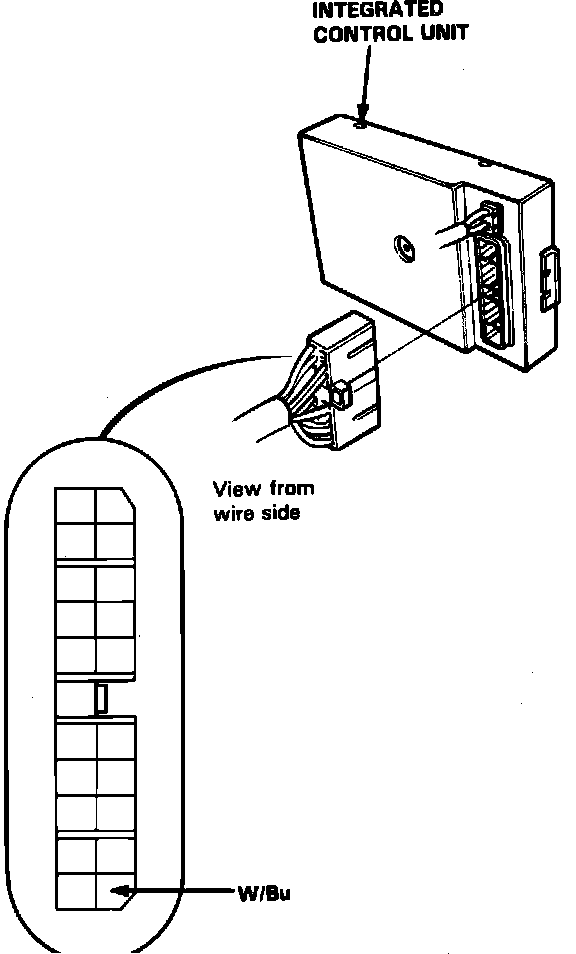

Charge Lamp/Indicator: Testing and Inspection
1. Ensure alternator belt is properly adjusted and that all electrical connections are secure and free from corrosion.2. Observe warning lamp with ignition on and engine not running.
3. If warning lamp does not light, disconnect electrical connector from alternator and short the white/blue wire in terminal to ground.
4. If lamp still does not light, check the following:
a. Blown fuse No. 9 in dash fuse panel or defective bulb.
b. Open in black/yellow wire between warning lamp and fuse panel or between fuse panel and ignition switch.
c. Open in white/blue wire between warning lamp and voltage regulator.
5. If lamp lights in step 3, perform ALTERNATOR & REGULATOR TEST.
6. Run engine at idle and observe warning lamp.
7. If lamp remains lit, check condition of fuse No. 38 in underhood relay box and yellow/blue wire between relay box and alternator. If fuse and wire are satisfactory, perform Alternator & Regulator Test.
Fig. 14 Integrated Control Unit Electrical Connector:

8. If system is charging normally, proceed as follows:
a. Remove lower dashboard panel, then disconnect 21-pin connector from integrated control unit behind the fuse panel, Fig. 14, and observe warning lamp.
b. If lamp goes out, a short in the integrated control unit is indicated.
c. If lamp remains lit on standard models, a short to ground in the white/blue wire between warning lamp and control unit is indicated. If lamp remains lit on L and LS models, proceed to next step.
d. Remove trunk front trim panel, then disconnect 21-pin connector from anti-lock brake system control unit and observe warning lamp.
e. If lamp goes out, a short in the anti-lock brake system control unit is indicated. If lamp remains lit, a short to ground in the white/blue wire between warning lamp and control unit is indicated.